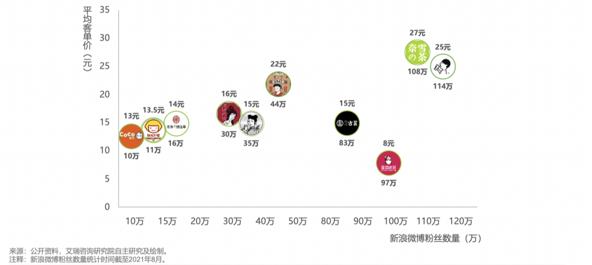
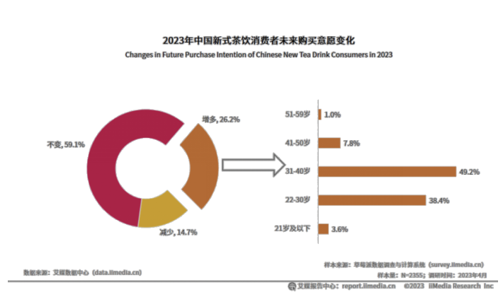

一、环境分析
（一）宏观环境——基于PEST模型分析
1.政策环境
2023年，政府工作报告提出要把恢复和扩大消费摆在优先位置，商务部门按照“2023消费提振年”总体安排采取了促进消费持续恢复和扩大的一系列政策措施，以促进消费、扩大内需。因此，在消费政策方面国家相关政策利好。
随着食品安全问题的层出不穷，政府对于食品安全的监管力度也在加强。2020年12月，市场监管总局印发《乳制品质量安全提升行动方案》，要求新式茶饮行业制定和完善生产标准，建立食品安全监测评价体系，同时加强新式茶饮行业专项执法检查的力度。这些政策的实施保证了新式茶饮行业的健康发展，但于品牌来说是对成本和运营压力的增加，对企业的利润可能产生一定的影响。
2.经济环境
艾瑞咨询数据显示，2023年新式茶饮市场规模将达3333.8亿元。随着新式茶饮消费场景更加多元化，品类不断创新拓宽，消费者对新式茶饮的热情持续上升，预计2025年中国新式茶饮市场规模达到3749.3亿元。2023年有24.6%的中国新式茶饮消费者表示未来消费频率将变高，消费者的需求将持续上涨。[来源：艾瑞咨询《2023-2024年中国新式茶饮行业运行状况于消费趋势调查报告》]
受到“口红经济”的影响，尽管疫情结束后居民消费水平增强，但消费者收窄了高消费的意愿。消费者将注意力放在了“低价格的奢侈品”上，更多消费“非刚需”但能“取悦”与“安慰”自己的商品，新式茶饮类是其中的代表。
3.社会文化环境
自疫情发生以来，社会对身体健康的关注度上升，健康生活习惯、健康饮食受到国家和医疗行业的积极倡导。同时，市场食品安全问题频发，国家整治力度加强，社会对于食品安全以及食品健康的重视程度也不断提升。出现过食品安全问题的品牌被消费者“避雷”，无添加剂、天然的食材、低糖低脂、无添加剂成为食品消费的热点。
4.技术环境
新式茶饮作为主打线上营销策略且线上普及程度相对较高的行业之一，庞大的互联网用户及外卖用户为其进行线上宣传及售卖奠定了良好的用户基础，从而利好其线上营销模式。[来源：艾瑞咨询《2021年中国新式茶饮行业研究报告》]]新式茶饮在社媒平台的讨论度从22年开始逐步升高，[来源：魔镜洞察《2023现制茶饮行业市场机会点研究》]社交媒体平台的用户通过各种社交媒体平台“种草”，再到现实中进行消费“拔草”，形成了销量的转化。
5.小结
宏观环境下的新式茶饮行业，机遇与挑战并存。
新式茶饮市场潜力大，发展迅速，宏观环境利好行业发展。在经济、社会的大背景下，新式茶饮也迎来了新的发展机遇。“口红经济”与社会对个人健康的关注深刻影响着新式茶饮行业的新动向。
国家与社会对于食品安全的规范与重视为新式茶饮行业提出了严格的要求，为新式茶饮行业提出了新挑战。
（二）微观环境
1.竞争者分析
随着新式茶饮走进消费者的日常生活，新式茶饮市场自身受到其他新兴市场的冲击。其中具有代表性的是奶制饮品市场，奶制饮品与新式茶饮的功能性较弱，该领域的宝珠奶酪、茉酸奶、blueglass等品牌在一、二线城市的扩张，赢得了部分消费者的喜爱和广泛关注，形成了新的“潮流”。
新式茶饮时代由2016年开启[ 中国新式茶饮行业发展历程的阶段划分来源于艾瑞咨询《2021年中国新式茶饮行业研究报告》]，至今已经推出了果茶、奶茶、纯茶等多种产品品类，也制造了奶盖、小料、“新中式”等多个产品卖点。而近两年，行业内的产品创新频率正在降低。以果茶为例，新产品仅仅是在替换水果种类，未推出具有开创性和引领性的创新产品。同时，各品牌的产品都实现了对多个品类的覆盖，品牌间、产品间差异化十分微小。
2019年，中国外卖用户数量已达4.6亿人。而新式茶饮是主打线上营销策略且线上普及程度相对较高的行业，线上渠道的销售也成为了行业的主要特点。几乎所有品牌都开通了线上点单的小程序，并且提供自取和外卖两种服务，同时入驻多平台，打通多样化的渠道。
茶百道、一点点等品牌增加在一二线城市的门店数量，霸王茶姬等在一线城市开首店，随着众多品牌进驻一二线城市，高端品牌如奈雪的茶、喜茶降价，进行“下沉”的尝试，市场呈现全面竞争格局，市场机会不再简单指向下沉市场或高线市场。[ 来源：中国连锁经经营协会CCFA《2023新茶饮研究报告》]
新式茶饮品牌数量众多，基于产品价格和消费者对与品牌的认知，市场出现高端品牌、中端品牌、下沉品牌的划分，但因为奈雪的茶、喜茶等高端品牌实施降价策略，高端品牌与中端品牌的区分不明显，中低端品牌集中度相对较高。
2.消费者分析
喜茶的潜在消费者主要包括具有一定消费能力，接受新式茶饮并且愿意为更高层次需求（马斯洛需求理论中生理需求以上的需求）消费，追求高品质、新潮，在食品饮品方面愿意尝试新鲜事物的群体。
通过深度访谈、资料查询以及生活观察，总结得出喜茶的潜在消费者具有以下特点：
年龄层面上，年轻学生和白领是喜茶乃至新式茶饮市场的主要潜在消费群体，其年龄定位为18-35岁。他们对于新鲜事物和市场潮流具有较高的敏感度与接受度，拥有一定的可支配的收入。需要注意的是，学生群体以大学生为主，但拥有可支配收入的初高中生也包含在内。
性别层面上，女性消费者居多。2022年，中国新式茶饮消费者中女性消费者占比达65.09%，男性消费者占比为34.91%。[来源：前瞻产业研究院《2023-2028年中国新式茶饮行业市场前瞻与投资战略规划分析报告》]
艾媒咨询数据显示，59.1%的中国新式茶饮消费者表示未来消费频次不变，26.2%的消费者表示消费频次变高，减少的消费者占14.7%，其中表示未来频次增多的消费者年龄段主要在22-40岁之间。下图表明22-40岁，尤其是31-40岁的群体对新式茶饮的接受程度逐渐提高，并且逐渐成为新式茶饮市场中重要的消费群体。[来源：艾瑞咨询《2023-2024年中国新式茶饮行业运行状况于消费趋势调查报告》]
大部分消费者是社交媒体的活跃用户。他们通过社交媒体获取新式茶饮的相关信息，发布“打卡”记录，与网友分享消费体验并和品牌官方互动。由于各品牌都对线上营销投入了大量精力，例如寻找KOC、KOL进行推广，并开展线上活动，以产品和品牌为主要内容的信息很容易被消费者所知晓，并且引起热烈讨论，甚至形成流行话题。
喜茶的消费者普遍接受“健康”和“品质”的概念，他们会从以上维度对产品进行评估，愿意消费“健康且高品质”的产品。但他们也普遍认为新式茶饮“并非真的健康”。尽管许多产品以无添加、0卡糖为卖点，他们依旧认为“都喝奶茶（新式茶饮）了，再怎么说也不是绝对健康”。
另外，他们对于“健康”和“品质”的追求是富有弹性的，“健康”和“品质”不是任何情况下都需要考虑的“法则”。这种弹性大多数情况下受到产品价格的影响，比如对低价的蜜雪冰城产品的品质要求明显低于对18元喜茶的品质要求。这种弹性有时也受到主观想法的影响，比如“就想喝点甜到不健康的”“就喜欢劣质糖浆的感觉”。
消费者普遍认为大部分新式茶饮品牌的同类产品没有差异。特别是“老”新式茶饮品牌，每个品牌都具有丰富的产品种类，并且提供口味定制服务，这使消费者在品牌间的流动性极强，很少一部分消费者对品牌形成了绝对的忠诚。另外，消费者普遍不清楚各品牌传递的品牌理念，他们无法感知到品牌终极价值层面的区别，甚至感知不到品牌的终极价值。
品牌间微弱的差异建立在产品价格和消费价值的感知上。消费者根据产品价格和品牌形象将品牌划档：喜茶、奈雪的茶在第一档，茶百道、一点点在第二档，蜜雪冰城在第三档。
喜茶的潜在消费者乃至新式茶饮市场的潜在消费者普遍认同“新式茶饮不是刚需”的观点。他们认为“奶茶（新式茶饮）不能当饭吃，也不能当水喝”，新式茶饮是生活的调味剂。有的消费者在记账时会将新式茶饮的消费归类为零食消费，而非一日三餐消费。他们认为新式茶饮是“搭子”，工作学习间隙、逛街无聊、用餐等情况下会消费新式茶饮。
潜在消费者比起新式茶饮产品本身更在意其带来的情绪价值，认为新式茶饮不是为了解决生理需求而存在的，自我奖励成为消费者购买新式茶饮的重要动机。
二、品牌分析
（一）发展目标——推动品质，激发喜悦
《喜茶这十年》年报中提到，喜茶定下了未来几年的目标：将真品质的茶饮和激发喜悦的品牌，带给更多的大众用户。[ 来源：HEYTEA喜茶《喜茶这十年》]
需要特别注意的是，喜茶的品牌目标在2022年经历了转变：由“灵感之茶”转变为“喜悦发生”。这一转变体现了喜茶营销战略的改变，由原来的高端定位逐渐下沉，选择贴近更多消费者（大众用户）。
1.真品质好茶
喜茶对产品的高品质追求是一以贯之的。喜茶通过喜茶GO小程序的配方大揭秘板块向消费者公开所有产品的原料，说明不同时节使用的不同产地原料，下架以过季鲜果为原料的饮品（如杨梅系列、多肉桃李），推出纯茶产品并强调“纯粹茶香”，以多种方式的组合使消费者感知喜茶的“真品质”。
2.喜悦发生
“喜悦”与产品的联系不紧密，更多通过概念性的话语和其他行动来传递情绪价值。例如在联名活动中，喜茶与NORITAKE的联名被赋予“极简之喜”的含义，喜茶与原神的联名被以“心有所喜，约有所期”为主题，产品“水云间”传达“笔墨有无间，轻盈达意”。
3.面向大众
喜茶“面向大众”的市场定位由《喜茶这十年》报告提出，其含义一是让更多人喝到新式茶饮，二是让真品质茶饮走进大众生活。
喜茶的一系列表现反映了其打开中低端市场的决心，如产品降价；开放加盟店；关闭手造店和Lab门店，增加GO门店，以应对外卖订单的增长等变化。但喜茶没有因价格的降低而影响其对真品质的追求，延续了高端定位时期的部分策略，如选用优质原料；与热门IP、奢侈品品牌联名，以凸显品牌价值；门店、包装采用富有“高级感”的视觉呈现。
（二）营销战略战术
1.总体战略：刺激用户转化复购
在新式茶饮市场已经逐渐饱和的今天，以有一定消费能力的年轻女性为代表的主要消费群体已经被完全发掘，没有扩大市场的空间；新式茶饮品类同质化严重，相互替代程度高，产品价格低意味着消费者试错成本低。因此，新式茶饮品牌需要将有限的消费市场尽最大可能地转化为自己品牌的忠诚消费者，增加复购率。
2.具体战术
跨界营销的常用手段即联名，通过不同品牌的相互借力刺激销量增长，寻求共性联合创造更高的热度和价值，是喜茶目前采取的主要营销手段。联名的主要表现方式为新产品的推出、纸袋杯套等包装的更新、贴纸挂件等周边的赠送或捆绑售卖。
新茶饮市场对联名的尝试是从喜茶开始的，近年来新茶饮品牌的联名营销趋势也愈发明显。2017年，喜茶首次尝试了三次联名，之后的每年联名次数维持在20次左右。除了吸引新的用户群体、提高产品销量以外，高频次的联名使喜茶得以在消费者心目中反复刷新形象，联名IP的选择也符合消费者的生活模式，有效联名使品牌得以通过把握消费者情绪，拉近了与消费者的距离。
但需要注意的是，联名会一定程度上拓宽品牌形象，导致品牌本身的特色被弱化。即使喜茶在各种联名活动中都强调了“喜”的情绪核心，但消费者的关注点仍更多聚焦于新奇IP，喜茶反而成为了其他IP的载体。除此之外，失败的跨界联名也会对品牌形象造成冲击，例如喜茶与杜蕾斯的联名文案由于存在低俗的性暗示，引起了消费者的不适。
从市场层面来看，联名活动本是为年轻消费者营造新鲜感，刷新品牌形象，高频次的联名如今反而成了固定的“套路”，新鲜感消弭的同时也对消费者造成了审美疲劳。
喜茶在各大节日、热点时事等时期会推出相应营销方案，借用特殊时段的自带流量为品牌增加知名度。例如，在世界环境日的借势营销中，喜茶推出的「绿色喜茶」企划表达环保理念，推出环保新包装（如纸质吸管和杯托），鼓励消费者绿色生活、环保消费，通过对社会议题的关注与探讨提升品牌形象。除此之外，喜茶情人节期间推出520阿喜有礼卡，地摊经济阶段推出阿喜茶摊，一系列的借势营销使喜茶一直处于信息传播之中，持续在消费者思维之中叠加烙印。
（三）数字营销活动
1.小程序平台运营——私域流量池打造
喜茶是最早尝试建立小程序的新式茶饮品牌，其建立初衷是通过业务在线化解决线下点单时的排队问题，为消费者提供“提前点单免排队，即拿即走”的消费体验，后期则逐渐发展为将用户转化为私域流量的平台。
2017年，喜茶推出了喜茶GO小程序和喜茶星球二级会员系统，截至2022年末，喜茶会员系统内已有超过6300万会员。[[[] 来源：HEYTEA喜茶《喜茶这十年》]]除了小程序和会员系统，喜茶在线下门店的二维码立牌、用户点单的小票、线上点单的支付详情页、公众号的自定义菜单、小程序的主界面服务以及视频号的主页菜单都设立了添加企业微信的途径，将用户集中导流到企业微信号，添加企业微信号之后，加入到喜茶的社群进行培养，将普通用户转化为社群的一员。
喜茶通过AARRR模型运营私域，实现线下用户向线上用户的转化。
1、用户获取：2018年喜茶的线下门店数量已经超过400家，经常出现爆满和排长队的人流，线下门店店员引导用户扫码下单，线上公众号强引导到小程序，从而实现线上线下用户集中导入到喜茶GO小程序。
2、用户激活：通过喜茶GO注册成为喜茶会员，即可加入喜茶的会员等级成长体系，权益内容核心主推首单消费满减，通过利益刺激首单转化。在不同的等级体系过程中，逐渐培养用户消费习惯，激活用户的潜在消费需求。
3、用户留存：喜茶运营的策略是公域矩阵内容+用户触达的模式。社群是最佳召回留存用户的阵地，产品种草、秒杀促销，以及定期的新品尝鲜，都可以更快更精准地提升小程序留存效率。
4、用户复购：在成长体系的等级权益过程中，品牌设置第2单半价、买一赠一、学子卡的88折券包、阿喜团餐、限时活动等促销形式，通过不同的补贴营销组合形式，引导个人、企业、周边人脉多单消费。
5、用户传播：喜茶举办多种参与性活动，如体验卡分享赠送好友、一起喝享随机立减、一起喝免配送费，在引导用户多单消费的同时，通过赢得媒体进行口碑传播的建设。
2.多平台流量矩阵——公域口碑建设
除了私域流量池的打造，喜茶在多个公域平台也进行了营销，从而实现多平台交叉组合的流量矩阵，打造品牌的知名度与口碑。在微信群、公众号、朋友圈、视频号、小程序等多个流量触点差异化运营，形成用户的循环触达；在抖音、微博、小红书等公域发布活动信息，举办抽奖互动等，实现对非忠诚消费者的触达。
3.数据化分析用户行为
喜茶对用户的购买行为进行数据化分析，在获取用户画像的同时，细化消费者的消费颗粒度，加深与消费者的链接。例如，经过喜茶对用户数据的分析，发现夏天用户选择“少冰”选项的人居多，冬天“温热”居多，因此会将默认选项根据季节调整，并在冬季增加“热饮推荐”系列；对于新用户和经常消费的忠诚用户，喜茶的推荐机制会有所区别，即新用户的点单栏中主打产品、经典产品位于上方，老用户的点单栏中新产品、联名活动产品位于上方。
（四）品牌问题
高端品牌下沉，难以有效触达大众。由品牌分析可以看出，喜茶自2022年调价以来，开始实行一系列“下沉”战略以扩大消费市场。但根据消费者分析来看，喜茶通过完整的供应链资源、高品质的用料、富有设计感的装潢等方式营造的高端品牌形象已经深入人心，即使喜茶实行下沉战略，其品牌形象在新式茶饮市场内仍属于高端层次，对中低端消费者来说存在“距离感”。“下沉”战略的实施没有让消费者觉得亲民，反而令消费者产生了价格下降会导致品质下降的质疑。
终极价值传递不足，造成品牌空心化。喜茶的目标与品牌终极价值经历了一次转变，由“灵感之茶”变为“喜悦发生”，可见品牌想要传达通过消费饮品获得喜悦的品牌价值，但喜茶除了在营销中用活动名称强调“喜”的主题，并没有与消费者建立有效的情感连接，导致品牌的终极内涵没有有效传达给消费者。
三、数字营销建议
（一）打造拟人化IP，拉近与消费者的距离
拟人化IP，即赋予品牌以人类的性格与形象特征，通过故事、插画、动画等形式进行包装，以更亲近消费者的方式传递品牌价值。对于喜茶而言，可以考虑创造一个与品牌LOGO相似的拟人形象，拉近与消费者的距离。
IP形象可以用于社交媒体互动，以卡通形象在社交媒体上与粉丝互动，为品牌增添人格化特性，在更为场景化、具象化的社交媒体互动中增强用户粘性。利用IP形象创作品牌故事，并通过短视频、漫画等形式进行传播。这不仅能增强品牌记忆点，还能拉近消费者与品牌的距离。与此同时，将IP作为活动的主角或代言人，吸引更多用户参与线下活动，提升品牌知名度。
（二）与消费者建立情感连接，有效传递“喜”
设计个性化年度总结，即基于用户的消费数据和行为，生成个性化的年度报告。报告中可以包含用户的消费频次、最常购买的饮品、消费最多的时段等信息，同时还可以为用户提供一些个性化的反馈和建议。通过年度总结，为用户提供一个了解自己全年饮茶习惯的平台，增强用户的参与感和归属感。基于年度总结中的数据，为用户提供个性化的推荐，如推荐他们可能喜欢的新的茶饮口味或搭配。通过社交媒体分享年度总结，可以帮助喜茶进行口碑传播，吸引更多潜在用户。但需要注意的是，报告中应尽量避免对消费金额的强调，更应聚焦于消费的产品的特性，再结合用户的个性化消费习惯为其赋予能够阐述个性的slogan，如“热衷于尝新的口感体验者”“对经典情有独钟的长情品味者”等。
进一步增加在节日等重大纪念日期间的营销，深度参与消费者生活，并在营销中强调“喜”的概念，使品牌的终极价值易于感知。除了传统的节日营销，喜茶可以增加“第一次消费喜茶纪念日喜一下”“期末考、工作项目结束喜一下”“下班犒劳自己喜一下”等新式具有纪念意义的日期进行营销，定期通过微信发送提醒，深度参与消费者生活，在消费者心目中树立“生活中有喜事就喝喜茶”的品牌理念，为消费赋予情绪意义，从而与消费者建立情感连接，实现终极价值的传递。